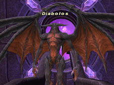
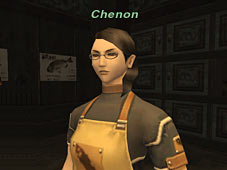

Several new quests have been added, including a quest to obtain the summonable avatar Diabolos, and an event that culminates in a battle with the mighty Wyrmking, Bahamut!
The following changes have been made to the Fellowship system:
-Several quests that raise the level limit, etc. of your adventuring fellow have been added.
-The variety of weapons and armor available to your adventuring fellow has been expanded.
-Several new options are available at the Rendezvous Point.
-The following changes have been made to the items required to change the weapon wielded by your adventuring fellow:
Ganko -> Hibari
-If the player character’s TP is at 100% or higher, adventuring fellows using the combat style “Fierce Attacker” will now make an announcement when their TP reaches 90%.
-The weapon skill choices of adventuring fellows using the combat style “Fierce Attacker” have been changed.
-Adventuring fellows using the combat style “Soothing Healer” will use enhancement magic on the player character twice as often as when using the basic “Healer” style.
-The equipment of adventuring fellows will no longer change in Promyvion areas.
-An issue where adventuring fellows would deal more damage to lower level monsters than the player has been addressed.
-The incorrect attack and delay of adventuring fellows using hand-to-hand weapons has been addressed.
-The correct amount of damage will now be displayed when “Everyone's Grudge” is used on an adventuring fellow.
-An issue wherein certain areas of equipment became unchangeable after selecting the option “Fashionable equipment” at the Rendezvous Point multiple times has been addressed.
-Adventuring fellows will no longer leave immediately after being called by a character in an alliance of 4 or more members.
-The quest to investigate the Emptiness has undergone the following adjustments:
>Adventuring fellows will gain increased experience rewards for completing layers beyond the first layer of Promyvion - Holla, Promyvion - Dem, and Promyvion - Mea.
>The position of the “???” target in the second layer of Promyvion - Holla has changed
After beginning the escort leg of the quests Escort for Hire (Windurst), Escort for Hire (San d’Oria), and Escort for Hire (Bastok), if players do not talk to the NPC within 5 minutes, the NPC will disappear.
*After talking to the NPC even once, the NPC will remain for the duration of the quest (30 Earth minutes) without further contact from the player.
Players will now be able to check to see if Limbus is occupied.
Fish Ranking is now available.

-Speak to the NPC Chenon at the Fishermen’s Guild in Selbina to learn about or participate in Fish Ranking.
-About Fish Ranking
A certain variety of fish will be specified for each Fish Ranking contest. Players who wish to participate must obtain the fish and trade it to Chenon. The participant whose entry best fits the conditions set forth in the contest rules will be declared victorious.
Contest entries for Fish Ranking will be accepted for a period of two weeks (Earth time). After the competition is over, the results will be announced for the next two-week period. This cycle will continue so that the event is held twelve times a year.
-Conditions for Participation
Anybody can participate as long as he or she possesses the fish specified by Chenon. There are also no rules regarding the method of acquiring the fish. You can catch it yourself, buy it at the auction house, or search other players’ bazaars.
-Rules
Three rules determine what kind of fish to seek for the contest.
<Standard Rules of Evaluation>
Rule A: Type of Fish
The first rule specifies the variety of fish to be used for the contest.
Rule B: Fish Specifications
The second rule specifies whether the fish will be evaluated based on its weight, size, or both.
Rule C: Large vs. Small
The third rule specifies whether the fish with the greatest value or the smallest value of weight/size will be declared the winner.
Speak to Chenon while entries are being accepted to learn the rules for the current competition.
-How to Participate
Trade the fish specified for the contest to Chenon during the submission period to participate in Fish Ranking.
*Note
-You must pay a small registration fee in order to submit an entry.
-You cannot view other players’ fishing records during the submission period.
-You can only have one submission entered into the contest at a time. You may submit new entries, but please note that any new entry will remove the previous submission from the contest.
-Any fish that have been entered in a Fish Ranking competition will be labeled and will be unusable for future contests. However, no other changes to the fish will be made, and it may be used in any other typical way, such as selling, cooking, and quests. However, if a labeled fish is sold, it will not lose its mark, and will continue to be unavailable for contest entry.
-The Submission Period
During the submission period, you may confirm or withdraw your entry at any time at no extra cost. However, please take note that you cannot resubmit an entry that has been withdrawn.
-Ranking Results
The results will be announced following the two-week submission period. Speak to Chenon to view the ranking board.
The ranking board lists rank, tier, the participant’s name, and entry details. In the case of a tie, the tied rank will be listed twice, and the list will skip the following number. For example, if two players tied for rank 2, the list would display as follows.
Rank 1
Rank 2
Rank 2
Rank 4
...
-Awards
The top twenty participants will be eligible for the following awards.
Rank 1: Title “Gold Hook,” Pelican Ring, and prize money
Rank 2: Title “Mythril Hook,” Pelican Ring, and prize money
Rank 3: Title “Silver Hook,” Pelican Ring, and prize money
Rank 4-10: Title “Copper Hook,” Pelican Ring, and prize money
Rank 11-20: Pelican Ring
You can view the ranking by speaking to Chenon during the announcement period and selecting “View ranking board.” If you have placed in the top ten, a special graphic will display, showing that you are eligible for an award.
In the event of a tie, all players will receive an award and a new title with regard to their tier, but the prize money will be divided among the participants.
*Note
Award winners may receive their prize at any time while the results are being announced. However, the player will no longer be eligible for an award after the announcement period ends, so it is important to accept your prize in a timely fashion. If your inventory is full, you will be unable to accept your reward. If you do not make space in your inventory and accept your prize before the announcement period is over, you will not be able to receive it at a later time.
-Additional Notes
>All ranking results are erased at the end of the announcement period. However, you can view the number of awards received in each tier using the “View award history” option.
>You can revert to any previously received title by speaking to a bard in the town where the title was originally earned.
The following measures against MPK (Monster Player Kill) have been implemented.
-If a player is KO'd or moves to a new area while fighting a monster outside the radius that it remains within when not engaged in battle, the monster will not begin attacking others in the surrounding area. Instead, it will simply disappear.
After being drawn out of that radius during battle and released, the monster will disappear, and then reappear after a short time in its proper location. In addition, the monster that reappears will be the exact same monster that disappeared, and not another monster of the same type.
This rule will not apply to notorious monsters.
-Monsters that have been rendered immobile with the "Bind" spell will not attack anyone other than the party or alliance that it is targeting.
New field areas of Dynamis have been introduced: Dynamis – Valkurm, Dynamis – Buburimu, and Dynamis – Qufim. In contrast to existing areas, only a maximum of 36 people can enter the new areas after meeting the specified requirements. However, the 3-day waiting period for reentering any area of Dynamis still applies.
*Players who have not installed the expansion disc FINAL FANTASY XI Rise of the Zilart or FINAL FANTASY XI Chains of Promathia, or who have not registered the expansion content, will be unable to enter Dynamis - Valkurm, Dynamis - Buburimu, or Dynamis - Qufim.
The following features will accompany the release of the new areas:
-New story developments
-New items that can be used to improve relic armor
-New items available only in the new Dynamis areas
*Relic equipment and ancient currency that players could earn in previously released Dynamis areas will also be available in the new areas
*The entry points for the new areas of Dynamis will be known as “Hieroglyphics,” as opposed to “Trail Markings” for the previously released areas.
Related Information>>
The NPC Sagheera will now accept relic armor for restoration.
Beastmasters will now receive 100% of the experience gained for enemies defeated with a pet summoned by the “Call Beast” ability.
The beastmaster ability “Reward” will now include a “Regen” effect. The amount of HP restored will be determined by the level of the pet and the type of pet food used.
The dragoon two-hour ability is now “Spirit Surge.” In accordance with this change, the recast time for “Call Wyvern” has been reduced to twenty minutes and will only be available when the main job is set to dragoon.
Spirit Surge
Adds the wyvern's strength to the dragoon. While this ability is in effect, “Jump” abilities are affected as follows:
*The ”Call Wyvern” ability cannot be used while “Spirit Surge” is in effect.
Jump
Temporarily weakens an enemy’s defense.
High Jump
Enemy’s TP is reduced by a percentage proportionate to the amount of damage inflicted.
Super Jump
As seen from the enemy target’s position, the closest party member behind the dragoon has his or her enmity reduced by half.
Wyverns will now have the equivalent of the job trait "Subtle Blow," reducing the amount of TP gained by opponents from the wyvern's attacks.
“Diabolos” has been added as a new summonable avatar.
The maximum number of usable merit points has been increased in all categories in the following manner:
Combo total and sub-categories:
HP/MP
Attributes
Combat skills
Magic skills
Others
Combo total only:
Individual job categories
The location of certain monsters in the Phomiuna Aqueducts and the Sacrarium has been adjusted.
The behavior of certain notorious monsters in Lumoria has been adjusted.
Certain notorious monsters in the Sacrarium will no longer use the weapon skill “One Inch Punch.”
An issue wherein the delay between disengaging from an enemy and being able to attack once more not being equal to the delay of the weapon equipped has been addressed.
*This delay is calculated after considering “Haste” and “Slow” effects.
The chance of obtaining the beastmaster broth ingredients skull locusts, king locusts, and snapping moles through harvesting or mining has been changed in the following areas:
Giddeus/West Sarutabaruta/Zeruhn Mines
The variety of items obtainable through mining in Ifrit’s Cauldron has been expanded. The chance for pickaxes to break has also been adjusted in this area.
The "pitchfork" and "pitchfork +1" obtained during this year's Harvest Festival event have been added to the list of storable special equipment.
The "Crow Jupon" set is now eligible for exchange with a key item voucher from the storage NPC.
"Patissier" and "Stewpot Mastery" have been added to the key items available through the Culinarians' Guild contracts.
New synthesis recipes have been added.
Items marked as “Rare” have been removed from the rewards obtainable through the Brigand's Chart quest. This change will reduce the chance of empty treasure chests appearing.
Monsters that appear during the Pirate's Chart quest in the Valkurm Dunes can now detect characters that are using “Sneak.”
New items bearing the same names as the previously released “Albatross Ring” and “Penguin Ring” have been added. In contrast to the already existing items, the duration and recast time for the enchantments on the new “Albatross Ring” and “Penguin Ring” will be six times shorter, while the number of charges will be increased by a multiple of six. This adjustment lowers the risk of the enchantment effect being wasted while maintaining the same total duration.
*The previously released “Albatross Ring” and “Penguin Ring” will remain unchanged. However, using the enchantment on both the new and old version of one of these rings at the same time will not provide double the effect.
The icons for the following items have been changed:
Justaucorps/ Justaucorps +1/Vermillion Cloak/Royal Cloak/Black Cotehardie/Flora Cotehardie/Blue Cotehardie/Blue Cotehardie +1/Black Cloak/Demon's Cloak/Duende Cotehardie/Vampire Cloak/Healing Justaucorps
The following item names have been changed:
Gawaine’s Axe -> Gawain’s Axe
Millenium Horn -> Millennium Horn
New terms have been added to the auto-translate feature.
| Category | Term |
| Controller | Directional pad |
| Controller | Expansion port |
| Controller | Trigger |
| Controller | Xbox Guide button |
| Place Names | Dynamis - Valkurm |
| Place Names | Dynamis - Buburimu |
| Place Names | Dynamis - Qufim |
| General Terms | Kodoku |
| Job Abilities | Spirit Surge |
| Avatars | Diabolos |
| Pet Commands | Camisado |
| Pet Commands | Somnolence |
| Pet Commands | Nightmare |
| Pet Commands | Ultimate Terror |
| Pet Commands | Noctoshield |
| Pet Commands | Dream Shroud |
| Pet Commands | Nether Blast |
| Pet Commands | Ruinous Omen |
When using the "Seek Member" function under "Party" in the main menu, the resulting list will now include all party-seeking characters in the region without first narrowing the search parameters to a level range close to your own.
An issue wherein it was impossible to directly target and invite a character that had selected "Autogroup" has been addressed.
When choosing to register a friend within FINAL FANTASY XI after receiving a “Let’s be friends” message, an issue where the decision to accept was not properly confirmed has been addressed.
Changes to Ballista:
-The rook locations in the Pashhow Marshlands and Meriphataud Mountains have been changed.
-An issue wherein characters recovering from a “Stun” effect were temporarily unable to dig for or shoot Petras has been addressed.
An issue where the difficulty level of fishing varied depending on the client used has been addressed.